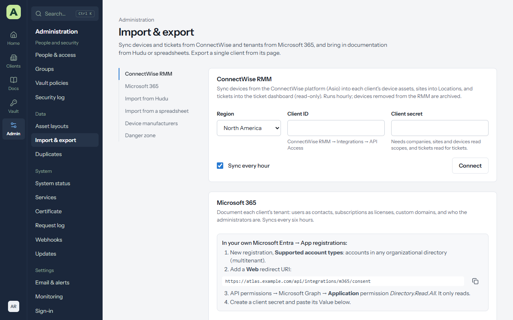
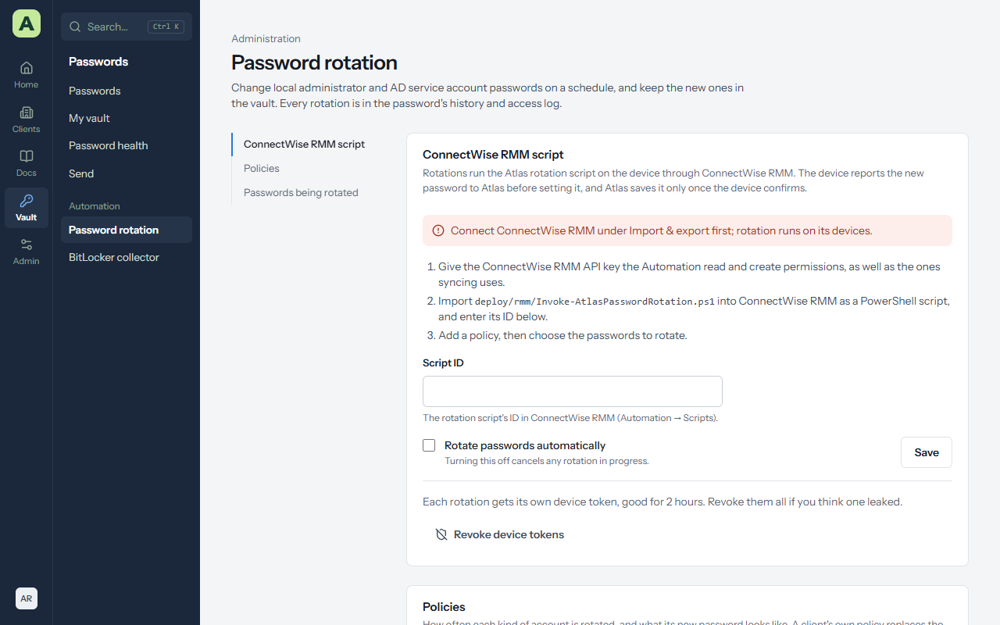

Chapter 13
Data and integrations
Microsoft Teams is under Administration → Microsoft Teams. Imports and syncs are under Admin → Import & export; the BitLocker collector and password rotation are in the Vault area.


Microsoft Teams
Administration → Microsoft Teams links each client to its own Teams channel. Staff can then read and post in that channel from the client's More → Teams page, and Atlas posts alerts there. Atlas signs in to Teams as one Microsoft work account you connect; no Azure Bot, Teams app or extra hosting is needed. Posts appear under that account's name, and Atlas's security log records which staff member wrote them.
Before you start
You need a Microsoft Entra account that can register apps and grant admin consent, and a Teams-licensed work
account that is a member of every channel Atlas will post in. A dedicated account, such as
atlas-alerts@yourmsp.com, keeps alerts from looking like a person wrote them, but may need its
own licence.
Setting it up
-
In the Microsoft Entra admin center, open App registrations → New registration. Choose
Accounts in this organizational directory only. Under Redirect URI, choose
Web and enter your Atlas address followed by
/api/integrations/teams/callback, such ashttps://atlas.example.com/api/integrations/teams/callback. Choose Register. - Copy the Directory (tenant) ID and Application (client) ID.
- Under Certificates & secrets, create a client secret and copy its Value. Note when it expires.
-
Under API permissions → Add a permission → Microsoft Graph → Delegated permissions, add
ChannelMessage.Read.All,ChannelMessage.SendandChannelMessage.ReadWrite, plusopenid,profile,emailandoffline_access. Choose Grant admin consent. - In Atlas, tick Enable Microsoft Teams, enter the Directory (tenant) ID, Application (client) ID and Application secret, and save.
- Choose Connect Microsoft account, and sign in as the work account from Before you start.
-
Map each client to its channel. In Teams, choose Get link to channel on the channel; the
link contains the team ID (
groupId=…) and the channel ID (19:…@thread.tacv2, URL-encoded; decode%3ato:and%40to@). In Atlas, choose the Client, and enter the Team ID, a Channel name people will recognize, and the Channel ID. - Optionally, enter a Security channel ID (optional): a channel in the same team that gets breach and infection alerts instead, such as one only your security team can see. It must not be a client's discussion channel.
- Choose Send test notification. A test message marked as a test should appear in the channel.
Automatic alerts
Under Automatic alerts, tick which alerts go to Teams: Expirations, Document reviews, Password breaches and Confirmed infections.
| Setting | What it does |
|---|---|
| Reminder days | Days before an expiry or review date when the client's channel is told. The default is 30, 14, 7, 1 and 0; 0 includes anything overdue. |
| Daily digest hour (0–23) | Expirations and reviews reaching a reminder day are grouped into one post a day, after this hour. Quiet days send nothing. |
| Time zone |
The time zone for that hour, such as America/New_York. Daylight saving time is followed.
|
Breaches and infections are checked every minute and posted straight away. A resolved infection is posted as a reply in the original thread. Posts never include a password, username, notes or recovery key: only a summary and a link that needs signing in to Atlas.
Once the alerting center is live, its rules send Teams alerts instead, so they aren't sent twice.
When something goes wrong
Delivery history lists every post with its client, alert, status and details. If Microsoft throttles Atlas, it waits and tries again, up to five times. If Microsoft asks the account to sign in again, alerts wait in the queue: choose Connect Microsoft account again, and they go out. A post whose outcome Atlas couldn't confirm is held for you to check in Teams rather than sent twice. When the secret expires, create a new one, paste it into Application secret and save. The Teams guide covers the infection-event feed and the details.
Import from Hudu
- In Hudu, go to Admin → API Keys and create a key. A key without password access imports everything except passwords.
- In Atlas, open Import & export → Hudu, enter the Hudu address (https only) and the key, and choose Connect. The key is encrypted with the master key.
- Choose what to bring in: kinds of data, companies, and asset layouts. The choices are saved for next time.
- Preview counts what Hudu has. Start import runs it in the background, with progress and a summary per type.
| Hudu | Atlas |
|---|---|
| Companies | Clients. A company is matched to an existing client with the same name. |
| Asset layouts and assets | Layouts and assets under the matching client. |
| Knowledge base articles | Documents for the client, or the MSP knowledge base. |
| Passwords | The client's vault, including one-time code keys. |
| Processes | Checklists. |
| Networks | Networks assets. |
| Relations | Links between the imported items. |
Running it again is safe. Atlas remembers which Hudu item became which record and updates it rather than creating a duplicate. Archived Hudu items are skipped.
Import a spreadsheet (CSV)
Import & export → CSV brings in clients, contacts, locations, assets (into a chosen layout) or passwords.
- Choose the kind of data and the file (comma, semicolon or tab separated, up to 10 MB, with a header row).
- Check the column matching. Atlas matches columns by name, including common alternatives such as "Company", and any column can be reassigned.
- Choose Check the file first. It reports every problem with its row number and saves nothing.
- Choose Import.
Importing passwords needs Edit + passwords on each client involved, and is recorded in the security log.
ConnectWise RMM
Atlas reads companies, sites, contacts, devices and tickets from ConnectWise RMM through the ConnectWise platform API, and keeps each client's documentation current from them. It only writes to ConnectWise if you turn on one of the options that does.
Connecting
- In ConnectWise RMM, open Integrations → API Access and create an API client. Give it the read permissions for companies, sites and devices; tickets read for tickets; and, if you'll use them, devices write (for Atlas links), tickets create (for ticket notes and expiry tickets), and Automation read and Automation create (for password rotation). Copy the client ID and secret.
- In Atlas, open Import & export → ConnectWise RMM.
- Choose the Region your ConnectWise tenant is in: North America, Europe or Australia.
- Enter the Client ID and Client secret. The secret is encrypted with the master key; afterwards the field says Saved and encrypted. Leave empty to keep it.
- Leave Sync every hour ticked unless you only want to sync by hand.
- Choose Connect. Atlas checks the credentials before saving them. Later, the button is Save and test.
- Link each ConnectWise company to an Atlas client, or let Atlas create the client.
- Choose Sync now for the first sync, and watch its progress.
What to sync
| Option | What it brings in |
|---|---|
| Sites | Each linked company's sites, as locations. |
| Contacts | Each company's contacts, matched to existing ones by email. |
| Devices | Devices as assets, updating same-named ones. Manufacturer, model, serial number, operating system, last check-in, online status and endpoint protection come across; fields you add yourself are kept. A device the RMM no longer has is archived. |
| Tickets | Read-only, for the ticket cards and dashboard. Needs the tickets read permission. |
| Software and sign-ins | Each device's installed software and who signs in, and which host each virtual machine runs on. |
| BitLocker keys | Recovery keys kept in a device custom field, saved to the client's vault and linked to the device. Off until you turn it on. |
Save devices in chooses the asset layout. Automatic uses the Endpoints layout when there is one (a layout called Devices or Computer Assets is renamed to Endpoints), otherwise Configurations. Warranty dates for Dell, Lenovo and HP are looked up when ConnectWise has none.
Options that write to ConnectWise
These change data in your ConnectWise tenant, so they're off until you turn them on.
| Option | What it does |
|---|---|
| Atlas links | Writes each device's Atlas address into its Atlas link custom field on every sync, so technicians can jump from ConnectWise to Atlas. Add that device custom field in ConnectWise first. Needs devices write. |
| Ticket notes | Lets technicians add internal notes to tickets from Atlas, and adds a note to the ticket whose number is in the reason when someone reveals a password (never the password itself). Needs tickets create. |
| Expiry tickets | Opens one ticket for each domain, certificate, licence or warranty of a linked client coming due, on every sync. Days before it expires (1 to 180) sets how far ahead, and Service board the board's name (empty uses the first board). Needs tickets create. |
Disconnect deletes the secret from Atlas. Synced devices stay.
Microsoft 365
Import & export → Microsoft 365 documents each client's tenant from one multi-tenant app
registration with Directory.Read.All, consented once per tenant. Users become contacts (with
their licences and admin roles), paid subscriptions become License assets with seats bought and assigned,
custom domains become Domain assets, and a Microsoft 365 asset lists the tenant's domains, subscriptions and
administrators.
For GDAP, choose GDAP — sign in with a partner Microsoft account, save the partner tenant and multitenant app, and connect the partner account. Add Microsoft Graph delegated Directory.Read.All, DelegatedAdminRelationship.Read.All, and LicenseAssignment.ReadWrite.All permissions, then grant administrator consent. Each customer also needs delegated application consent and an active GDAP relationship with suitable roles assigned to the partner user's security group. Load customers and map each tenant to its Atlas client.
Clients → a client → Licenses reads Microsoft subscriptions and user assignments through that GDAP connection. Direct assignment/removal requires an Atlas administrator with recent authentication and a supported Microsoft customer role such as License Administrator through GDAP. Existing partner connections must reconnect and grant the additional license permission before making license changes. Atlas refuses an application-credential fallback when GDAP fails. Group-derived licenses remain managed through Microsoft Entra group membership; purchasing subscriptions and changing reseller billing terms remain with the reseller. Failed or unconfirmed requests are recorded in the security log; refresh before retrying an uncertain change.
Bitdefender GravityZone
Atlas reads each client's endpoint protection from Bitdefender GravityZone. It's read-only: Atlas never changes anything in GravityZone.
- In GravityZone, open My account → API keys and create a key with the Network and Companies APIs turned on. A service API key (Accounts → Service API keys) works too.
-
Copy the Access URL from My account → Control Center API. It's usually
https://cloud.gravityzone.bitdefender.com/api. - In Atlas, enter both under Import & export → Bitdefender GravityZone and choose Connect. Atlas tries the key before saving it, and keeps it encrypted.
- Link each GravityZone company to a client. A company's name is matched to a client's to suggest the link.
The sync runs every hour, and Sync now runs it straight away.
- The client's overview gets a Bitdefender card. It counts endpoints that are infected, need attention or are protected, and lists what needs attention first, with the reason. It also lists devices without Bitdefender: devices the RMM knows about that GravityZone doesn't manage, so they're likely unprotected.
- Each device matched to a GravityZone endpoint shows its state: policy, licence, last seen, agent version, risk score, signatures, and which modules are on.
- Needs attention means the licence has expired or isn't active, the malware signatures are out of date, the policy isn't applied, the endpoint is isolated, it hasn't been seen for 7 days, malware was removed in the last day, or the agent is out of date.
- Matching: endpoints are matched to the client's assets by name, host name or MAC address. Turn on Add endpoints that aren't in Atlas as assets to add the rest, in the same layout ConnectWise RMM uses.
- Disconnecting deletes the key and the synced endpoint states. Assets stay.
Export
- One client: Export on the client's page. See Clients.
- Everything: System status → Back up now makes a full encrypted backup. See Keeping Atlas healthy.
-
The API: with an API key,
/api/v1/openapi.jsondescribes every endpoint.
BitLocker collector
Vault → BitLocker collector gives you a script for your RMM that reads each Windows machine's BitLocker status and recovery keys and sends them to Atlas.
- Make an enrollment. Choose the client, a name, and whether it covers all of the client's devices or one. The script downloads at once. Keep the file as you would a password: it holds an upload token, and Atlas can't show it again.
- Add it to your RMM as a PowerShell script for that client, run as SYSTEM. It needs no parameters.
- Try it on one machine. It prints one line of counts (never keys) and exits 0 when the report was uploaded.
- Schedule it every 6 hours, and after a recovery key is rotated.
Machines are matched to assets by serial number, then by name. Revoke an enrollment, or Block one machine, to stop uploads; keys already saved stay in the vault. The script only reads: it can't turn BitLocker on or off or change a key.
Automatic password rotation


Vault → Password rotation changes local administrator and Active Directory service account passwords on a schedule, through ConnectWise RMM.
- Connect ConnectWise RMM, with Automation read and Automation create on its API key.
-
Import
deploy/rmm/Invoke-AtlasPasswordRotation.ps1into ConnectWise RMM as a PowerShell script, enter its ID on the page, and tick Rotate passwords automatically. - Add a policy for each account type: how often, and the password rules. A policy for All clients is the default; a client's own policy replaces it.
- Choose the passwords: the client, the vault entry, and the device the script runs on. For an AD service account, choose a domain controller.
How it stays safe. The script sends the new password to Atlas before changing anything, using a token good for that one rotation for two hours. Only a confirmed change replaces the password in the vault; the old one moves to its history. A failure keeps the old password, is recorded in the access history and security log, emails administrators, and is tried again after a day.